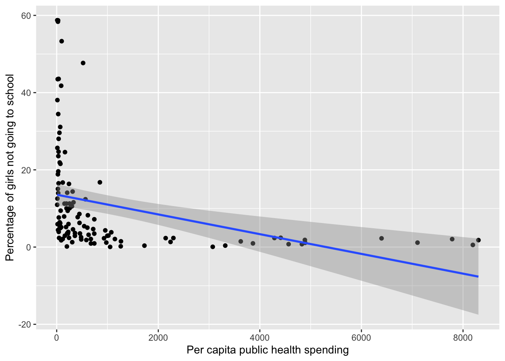
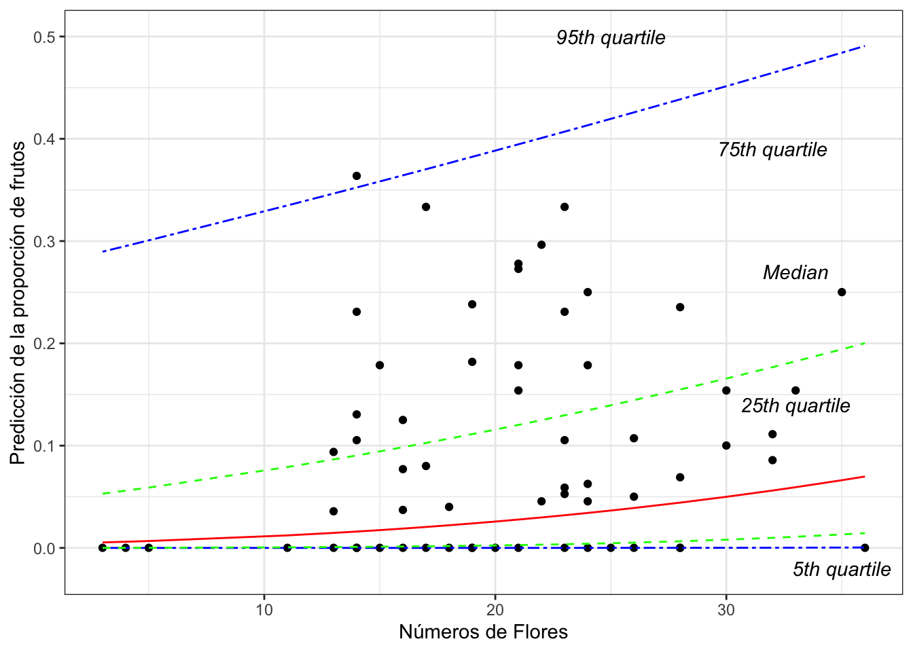
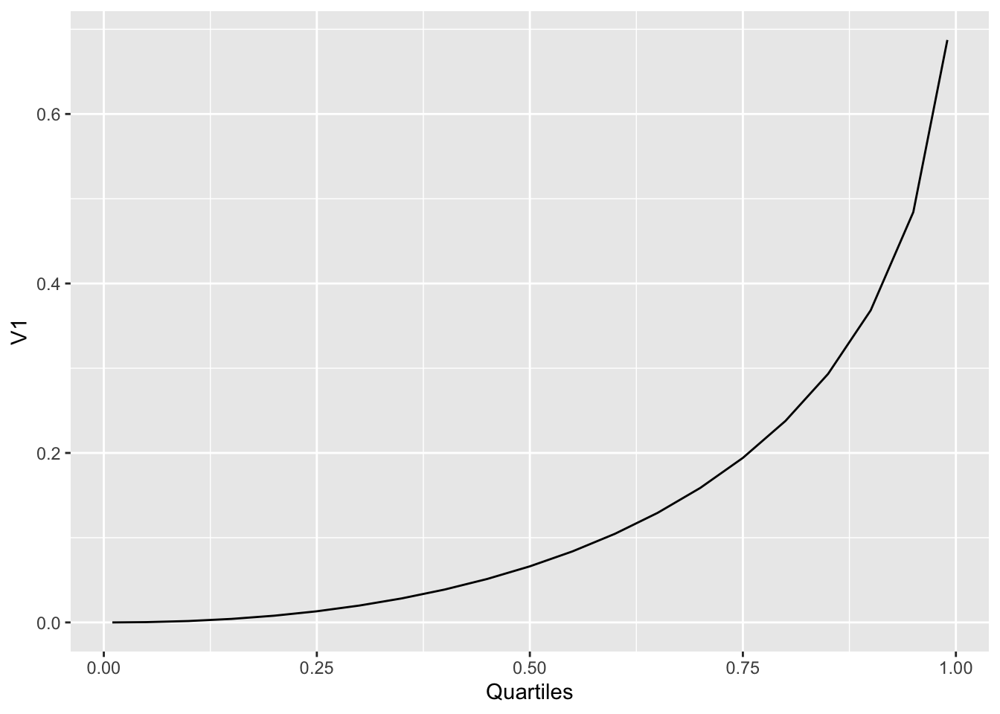
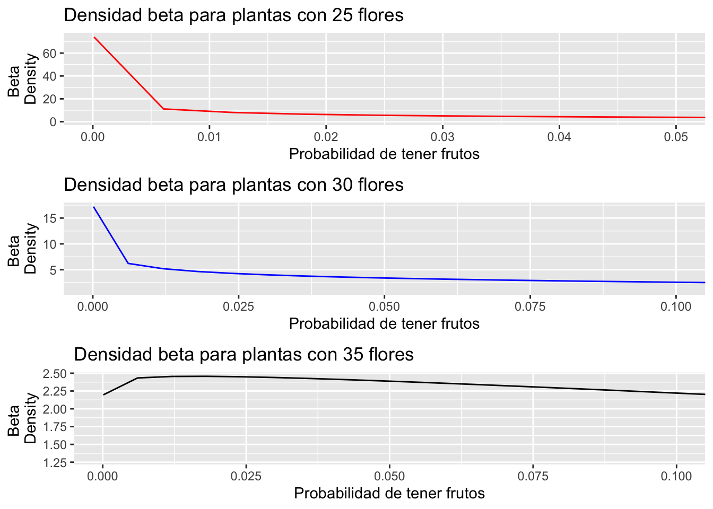

Chapter 20 Beta Regression
The method presented here is quite innovative (2010 onwards). Unfortunately there is not much information in the literature or the web about the method. You can find supplementary information in the Vignette of the package betareg.
References:
Cribari-Neto, F., and Zeileis, A. (2010). Beta Regression in R. Journal of Statistical Software, 34(2), 1–24. http://www.jstatsoft.org/v34/i02/.
Grün, B., Kosmidis, I., and Zeileis, A. (2012). Extended Beta Regression in R: Shaken, Stirred, Mixed, and Partitioned. Journal of Statistical Software, 48(11), 1–25. http://www.jstatsoft.org/v48/i11/.
Article on the beta regression and other R packages with other functions can be found here, Douma and Weedon 2019
20.1 What is a beta regression?
The beta regression is an approach under GLM “Generalized linear models”. The beta regression models dependent variables distributed with the beta distribution. Data with the beta distribution include proportions and ratios, where the values \(x\) are between 0 and 1 but not inclusive (i.e. \(0 < x< 1\)). In some packahes 0 and 1 can be part of the data set. In addition to producing a regression that maximizes the likelihood (both for the mean and the precision of a response distributed in beta), bias-corrected estimates are provided.
The values of the response variable satisfy \(0 < x < 1\). Consequently, if the values are 0 or 1, it is necessary to change them to \(0= 0.001\) and \(1 = 0.999\). The numbers cannot be 0 or 1, they must be greater than 0 and less than 1. Indeed, changing the values to \(0.001\) and \(0.999\) has no impact on the interpretation of the data, unless all the data are only \(0\) or \(1\), in which case this tool should not be used but a logistic regression.
The betaref package is used to perform the beta regression. The package is quite powerful and provides a lot of information about the data. The package is used to calculate the mean, the variance, the precision, and the quantiles of the data. The package also provides the AIC, BIC, and the log-likelihood of the model. Note that the focus of the GLM model is to develop a regression with the response through a link function and a linear predictor. Just like normal GLM, there are numerous link functions, which can be useful such as “logit”, “probit”, “cloglog”, “cauchit”, “log”, “loglog” to linearize the data.
Almosty all of the information presented here comes from Cribari-Neto and Zeileis (Beta Regression in R).
Consult the pdf, https://cran.r-project.org/web/packages/betareg/betareg.pdf for a package description and more details.
Typical analysis errors with data that are fractions.
We look at an example. Here the relationship between per capita public health spending in 156 countries and the percentage of girls who are not in school.
Data from the “World Development Agency”
20.2 What is the problem with the data?
library(ggversa)
#Edu_Salud_Gastos_GDP
ggplot(Edu_Salud_Gastos_GDP, aes(Gasto_Salud_percapita, Porc_Ninas_no_escuela))+
geom_point()+
geom_smooth(method = lm)+
xlab("Per capita public health spending")+
ylab("Percentage of girls not going to school")## `geom_smooth()` using formula = 'y ~ x'## Warning: Removed 46 rows containing non-finite outside the
## scale range (`stat_smooth()`).## Warning: Removed 46 rows containing missing values or
## values outside the scale range (`geom_point()`).
Note:
- there are negative proportion values
- the confidence interval is also negative
- the dispersion of the data in y around the mean is not equal as public health spending per capita changes (in x).
Models using the beta distribution solve these issues.
20.3 First step, what is a beta distribution?
The most important thing about the beta distribution is that the values NEVER are less than 0 or greater than 1 (i.e. \(0 < x < 1\)). In addition, the confidence intervals cannot be less than 0 or greater than 1.
Here are some examples of the beta distribution. The beta distribution is calculated with two parameters, shape 1 or \(\alpha\) and shape 2 or \(\beta\). We will not go into these parameters, although you can go to the Wikipedia page for more information. Note that if the parameters are not equal (\(\alpha \neq \beta\)), the distribution is not symmetrical. There is always a tail that extends to small or large values.
Here a series beta distributions. We will not go into how these these parameters are calculated, although you can go to the Wikipedia page for more information. Note that if the parameters are not equal (\(\alpha \neq \beta\)), the distribution is not symmetrical. There is always a tail that extends to small or large values.
20.4 Wikipedia
On the wikipedia page, you can see how the distribution changes when the parameters change.

20.5 Proportion of smokers in different countries
The data comes from the World Bank at the following link, Smokers. The file contains information on 187 countries and the proportion of the population over 15 years old who smoke.
## Rows: 187 Columns: 13
## ── Column specification ───────────────────────────
## Delimiter: ","
## chr (4): Country_Name, Country_Code, Indicator_Name, Indicator_Code
## dbl (9): Y2000, Y2005, Y2010, Y2011, Y2012, Y2013, Y2014, Y2015, Y2016
##
## ℹ Use `spec()` to retrieve the full column specification for this data.
## ℹ Specify the column types or set `show_col_types = FALSE` to quiet this message.| Country_Name | Country_Code | Indicator_Name | Indicator_Code | Y2000 | Y2005 | Y2010 | Y2011 | Y2012 | Y2013 | Y2014 | Y2015 | Y2016 |
|---|---|---|---|---|---|---|---|---|---|---|---|---|
| Honduras | HND | Smoking prevalence, total (ages 15+) | SH.PRV.SMOK | 3.9 | 3.1 | 2.5 | 2.4 | 2.4 | 2.3 | 2.2 | 2.1 | 2.0 |
| Ethiopia | ETH | Smoking prevalence, total (ages 15+) | SH.PRV.SMOK | 4.8 | 4.6 | 4.5 | 4.4 | 4.5 | 4.4 | 4.4 | 4.4 | 4.4 |
| Congo, Rep. | COG | Smoking prevalence, total (ages 15+) | SH.PRV.SMOK | 5.7 | 9.1 | 14.7 | 16.1 | 17.9 | 19.8 | 22.0 | 24.2 | 26.9 |
| Ghana | GHA | Smoking prevalence, total (ages 15+) | SH.PRV.SMOK | 5.9 | 5.0 | 4.4 | 4.3 | 4.3 | 4.1 | 4.1 | 4.0 | 3.9 |
| Niger | NER | Smoking prevalence, total (ages 15+) | SH.PRV.SMOK | 6.4 | 6.7 | 7.1 | 7.2 | 7.3 | 7.4 | 7.5 | 7.6 | 7.7 |
| Nigeria | NGA | Smoking prevalence, total (ages 15+) | SH.PRV.SMOK | 7.7 | 7.0 | 6.3 | 6.2 | 6.1 | 6.1 | 5.9 | 5.8 | 5.8 |
First convert the data in proportions since the program has to use data greater than 0 and less than 1. Select the year 2000 and create a histogram of the distribution.
Smokers$Y2000P=(Smokers$Y2000)/100 # convertir en proporción
Smokers %>% dplyr::select(Country_Name, Y2000P) |>
head()| Country_Name | Y2000P |
|---|---|
| Honduras | 0.039 |
| Ethiopia | 0.048 |
| Congo, Rep. | 0.057 |
| Ghana | 0.059 |
| Niger | 0.064 |
| Nigeria | 0.077 |
20.6 Convert the mean and variance into shape \(\alpha\) and \(\beta\)
Conver the mean and variance of the data into the values of the shape \(\alpha\) and \(\beta\). The following equation is used to calculate the shapes. The expected values and the variance behave differently.
The mean of a beta distribution is equal to
\[E(X) = \frac{\alpha}{\alpha+\beta}\] The variance os beta distribution is
\[V(X) = \frac{\alpha\beta}{(\alpha+\beta+1)(\alpha+\beta)^2}\]
Using the mean and variance, the following equations can be used to convert them into \(\alpha\) and \(\beta\).
\[\alpha = \frac{1-mu}{(var-1)/mu}*mu^2\] \[\beta = \alpha*(\frac{1}{mu}-1)\]
Here is the script to convert the parameters into shape.
estBetaParams <- function(mu, var) {
alpha <- ((1 - mu) / var - 1 / mu) * mu ^ 2
beta <- alpha * (1 / mu - 1)
return(params = list(alpha = alpha, beta = beta))
}
#mean(Smokers$Y2000P)
#var(Smokers$Y2000P)
estBetaParams((mean(Smokers$Y2000P)), (var(Smokers$Y2000P)))## $alpha
## [1] 3.592488
##
## $beta
## [1] 9.181559Now visualize de distibution of the proportion of smokers
- Green line is the normal distribution
- Red line is the beta distribution
Smokers$Y2000P=(Smokers$Y2000)/100 # convertir en proporción
x <- seq(0, 1, len = 100)
#mean(Smokers$Y2000P)
#var(Smokers$Y2000P)
ggplot(Smokers, aes(Y2000P))+
geom_histogram(aes(y=..density..), colour="white", fill="grey50")+
stat_function(aes(x = Smokers$Y2000P, y = ..y..), fun = dbeta, colour="red", n = 100,
args = list(shape1 = 3.593, shape2 = 9.185))+
stat_function(fun = dnorm,
args = list(mean = mean(Smokers$Y2000P, na.rm = TRUE),
sd = sd(Smokers$Y2000P, na.rm = TRUE)),
colour = "green", size = 1)+
xlab("Proporción de fumadores de mayor \n de 15 años por Pais")+
ylab("Densidad")+
annotate("text", x = .5, y = 4.2, label = "Verde: dist Normal", color="darkgreen")+
annotate("text", x = .5, y = 3.7, label = "Verde: dist Beta", color="red")+
xlim(-0.1, 0.9)## `stat_bin()` using `bins = 30`. Pick better value
## with `binwidth`.## Warning: Removed 2 rows containing missing values or values
## outside the scale range (`geom_bar()`).Calculate the confidence interval of the average of a beta distribution. The following packages are needed simpleboot, boot.
## Simple Bootstrap Routines (1.1-8)library(boot) # package to calculate the confidence interval of a beta distribution
n=187 # The smaple size of the data set.
alpha = 3.593 # The alpha parameter
beta = 9.185 # the beta parameter
x = rbeta(n, alpha, beta)
x.boot = one.boot(x, median, R=10^4) # Here we use the median as the central tendency because the *mean* is bias to the right
boot.ci(x.boot, type="bca")## BOOTSTRAP CONFIDENCE INTERVAL CALCULATIONS
## Based on 10000 bootstrap replicates
##
## CALL :
## boot.ci(boot.out = x.boot, type = "bca")
##
## Intervals :
## Level BCa
## 95% ( 0.2813, 0.3170 )
## Calculations and Intervals on Original Scale20.7 Visualization of the distribution with CI.
Overlay the confidence interval of the median on the beta distribution. The confidence interval is between 0.2320 and 0.2768. The confidence interval is not symmetric, and the distribution is not symmetric. The distribution is skewed to the right.
ggplot(Smokers, aes(Y2000P))+
geom_histogram(aes(y=..density..), bins=20, colour="white", fill="grey50")+
stat_function(aes(x = Smokers$Y2000P, y = ..y..), fun = dbeta, colour="red", n = 100,
args = list(shape1 = 3.593, shape2 = 9.185))+
geom_vline(xintercept =0.2320, colour="blue")+ # the confidence interval, lower limit
geom_vline(xintercept =0.2768, colour="blue")+ # the confidence interval, upper limit
rlt_theme+
xlab("Proportion of smokers over 15 years old by country")20.8 Regression model
Now let us view an example using regression model, where the response is a proportion.
library(betareg) # El paquete para hacer regresión beta
library(ggversa) # paquete para los datos
attach(dipodium)
head(dipodium, n=4)| tree_number | tree_species | dbh | plant_number | ramet_number | distance | orientation | number_of_flowers | height_inflo | herbivory | row_position_nf | number_flowers_position | number_of_fruits | perc_fr_set | pardalinum_or_roseum | fruit_position_effect | frutos_si_o_no | p_or_r_infl_lenght | num_of_fruits | species_name | cardinal_orientation |
|---|---|---|---|---|---|---|---|---|---|---|---|---|---|---|---|---|---|---|---|---|
| 1 | E.o | 75 | 1 | 1 | 2.47 | 40 | 11 | 35 | n | 1 | 24 | 0 | 0 | r | 1 | 0 | r | 0 | r | 1 |
| 1 | E.o | 76 | 2 | 1 | 1.97 | 50 | 19 | 47 | n | 2 | 23 | 0 | 0 | r | 2 | 0 | r | 0 | r | 2 |
| 2 | E.o | 76 | 3 | 1 | 1.95 | 350 | 18 | 63 | n | 3 | 25 | 1 | 0.04 | r | 3 | 0 | r | 1 | r | 8 |
| 3 | E.o | 58 | 4 | 1 | 3.24 | 210 | 24 | 47 | n | 4 | 20 | 5 | 0.25 | r | 4 | 0 | r | 5 | r | 5 |
20.9 Regresión beta, proporción de frutos por cantidad de flores
Now we will do the first regression analysis where our answer is a proportion.
The data comes from an Australian orchid species, Dipodium roseum, collected by RLT in 2004-2005. We are going to evaluate the relationship between the number of flowers and the proportion of fruits per plant. The first step is to ensure that there are no values of 0 and 1. In this case there is not a single plant that has 100% fruits, but there are individuals that have zero fruits.
REMEMBER x >0 y <1. 0 or 1 is NOT accepted. So a minimum value such as 0.001 can be added to the values of 0 and 0.001 can be subtracted from the 1 values. In reality, this modification does not impact the interpretation of the results.
the NAs are also removed from the file.
Note that the model is constructed as a linear model betareg(y~x, data =na.omit(df)). The variables in the file are PropFR, the proportion of fruits (number of fruits/numbers of flowers) for each individual and the number of flowers, Number_of_Flowers.
#head(dipodium)
library(tidyverse)
library(janitor)
dipodium_clean_names=clean_names(dipodium) # clean the names of the variables
dipodium2= dipodium_clean_names |>
dplyr::select(perc_fr_set, number_of_flowers, height_inflo, distance) |>
mutate(propfr=perc_fr_set+0.0001) |>
drop_na()# solucionar para remover los cero
head(dipodium2)| perc_fr_set | number_of_flowers | height_inflo | distance | propfr |
|---|---|---|---|---|
| 0 | 11 | 35 | 2.47 | 0.0001 |
| 0 | 19 | 47 | 1.97 | 0.0001 |
| 0.04 | 18 | 63 | 1.95 | 0.0401 |
| 0.25 | 24 | 47 | 3.24 | 0.25 |
| 0 | 25 | 61 | 0.85 | 0.0001 |
| 0.08 | 17 | 35 | 2.62 | 0.0801 |
modelpropFr=betareg(propfr~number_of_flowers+height_inflo+distance, data =dipodium2)
summary(modelpropFr)##
## Call:
## betareg(formula = propfr ~ number_of_flowers + height_inflo + distance,
## data = dipodium2)
##
## Quantile residuals:
## Min 1Q Median 3Q Max
## -1.9667 -1.0253 0.3277 0.8273 1.6420
##
## Coefficients (mean model with logit link):
## Estimate Std. Error z value Pr(>|z|)
## (Intercept) -2.01521 0.75104 -2.683 0.00729 **
## number_of_flowers 0.06069 0.02958 2.052 0.04020 *
## height_inflo -0.02469 0.01896 -1.302 0.19284
## distance -0.12250 0.09850 -1.244 0.21361
##
## Phi coefficients (precision model with identity link):
## Estimate Std. Error z value Pr(>|z|)
## (phi) 3.5330 0.7936 4.452 8.52e-06 ***
## ---
## Signif. codes: 0 '***' 0.001 '**' 0.01 '*' 0.05 '.' 0.1 ' ' 1
##
## Type of estimator: ML (maximum likelihood)
## Log-likelihood: 139.5 on 5 Df
## Pseudo R-squared: 0.1018
## Number of iterations: 20 (BFGS) + 1 (Fisher scoring)20.10 Visualize the beta regression
dipodiumbeta=dipodium2[,c("number_of_flowers","propfr")] # Create a df with only the variables of interest
dp2=dipodiumbeta[complete.cases(dipodiumbeta),] # remove all "NA"
modelpropFr=betareg(propfr~number_of_flowers, data=dp2) # The beta model using **betareg**
summary(modelpropFr)##
## Call:
## betareg(formula = propfr ~ number_of_flowers, data = dp2)
##
## Quantile residuals:
## Min 1Q Median 3Q Max
## -1.9515 -1.0815 0.2592 0.8719 1.6788
##
## Coefficients (mean model with logit link):
## Estimate Std. Error z value Pr(>|z|)
## (Intercept) -2.95068 0.45003 -6.557 5.51e-11 ***
## number_of_flowers 0.03047 0.01873 1.627 0.104
##
## Phi coefficients (precision model with identity link):
## Estimate Std. Error z value Pr(>|z|)
## (phi) 3.4044 0.7682 4.432 9.35e-06 ***
## ---
## Signif. codes: 0 '***' 0.001 '**' 0.01 '*' 0.05 '.' 0.1 ' ' 1
##
## Type of estimator: ML (maximum likelihood)
## Log-likelihood: 138.4 on 3 Df
## Pseudo R-squared: 0.0644
## Number of iterations: 14 (BFGS) + 2 (Fisher scoring)## 1 2 3 4 5 6 7
## 0.06814386 0.08534612 0.08299774 0.09801287 0.10073942 0.08070828 0.08534612
## 8 9 10 11 12 13 14
## 0.07418174 0.07847656 0.09535228 0.07418174 0.05578661 0.09535228 0.09022432
## 15 16 17 18 19 20 21
## 0.09022432 0.07847656 0.07211634 0.12506577 0.07630144 0.08070828 0.07418174
## 22 23 24 25 26 27 28
## 0.09535228 0.11540253 0.10932659 0.08299774 0.08070828 0.13188690 0.07211634
## 29 30 31 32 33 34 35
## 0.11540253 0.12176997 0.09022432 0.10932659 0.07418174 0.07418174 0.07847656
## 36 37 38 39 40 41 42
## 0.09801287 0.07630144 0.10353312 0.10353312 0.08775459 0.07418174 0.09535228
## 43 44 45 46 47 48 49
## 0.09801287 0.09022432 0.08534612 0.10353312 0.09275650 0.08534612 0.05420339
## 50 51 52 53 54 55 56
## 0.13541430 0.12176997 0.09022432 0.09535228 0.09535228 0.07847656 0.09275650
## 57 58 59 60 61 62
## 0.07211634 0.09801287 0.10932659 0.10932659 0.09801287 0.05741327dp2$response=predict(modelpropFr, type = "response")
dp2$precision=predict(modelpropFr, type = "precision")
dp2$variance=predict(modelpropFr, type = "variance")
dp2$quantile_.01=predict(modelpropFr, type = "quantile", at = c(0.01)) # calculate the quantiles of 1%
dp2$quantile_.05=predict(modelpropFr, type = "quantile", at = c(0.05))
dp2$quantile_.10=predict(modelpropFr, type = "quantile", at = c(0.10)) # calculate the quantiles of 10%
dp2$quantile_.15=predict(modelpropFr, type = "quantile", at = c(0.15))
dp2$quantile_.20=predict(modelpropFr, type = "quantile", at = c(0.20))
dp2$quantile_.25=predict(modelpropFr, type = "quantile", at = c(0.25))
dp2$quantile_.30=predict(modelpropFr, type = "quantile", at = c(0.30))
dp2$quantile_.35=predict(modelpropFr, type = "quantile", at = c(0.35))
dp2$quantile_.40=predict(modelpropFr, type = "quantile", at = c(0.40))
dp2$quantile_.45=predict(modelpropFr, type = "quantile", at = c(0.45))
dp2$quantile_.50=predict(modelpropFr, type = "quantile", at = c(0.50)) # calculate the quantiles of 50% (the median)
dp2$quantile_.55=predict(modelpropFr, type = "quantile", at = c(0.55))
dp2$quantile_.60=predict(modelpropFr, type = "quantile", at = c(0.60))
dp2$quantile_.65=predict(modelpropFr, type = "quantile", at = c(0.65))
dp2$quantile_.70=predict(modelpropFr, type = "quantile", at = c(0.70))
dp2$quantile_.75=predict(modelpropFr, type = "quantile", at = c(0.75))
dp2$quantile_.80=predict(modelpropFr, type = "quantile", at = c(0.80))
dp2$quantile_.85=predict(modelpropFr, type = "quantile", at = c(0.85))
dp2$quantile_.90=predict(modelpropFr, type = "quantile", at = c(0.90)) # calculate the quantiles of 90%
dp2$quantile_.95=predict(modelpropFr, type = "quantile", at = c(0.95))
dp2$quantile_.99=predict(modelpropFr, type = "quantile", at = c(0.99)) # calculate the quantiles of 99%
dp2 |>
head()| number_of_flowers | propfr | response | precision | variance | quantile_.01 | quantile_.05 | quantile_.10 | quantile_.15 | quantile_.20 | quantile_.25 | quantile_.30 | quantile_.35 | quantile_.40 | quantile_.45 | quantile_.50 | quantile_.55 | quantile_.60 | quantile_.65 | quantile_.70 | quantile_.75 | quantile_.80 | quantile_.85 | quantile_.90 | quantile_.95 | quantile_.99 |
|---|---|---|---|---|---|---|---|---|---|---|---|---|---|---|---|---|---|---|---|---|---|---|---|---|---|
| 11 | 0.0001 | 0.0681 | 3.4 | 0.0144 | 5.69e-10 | 5.87e-07 | 1.16e-05 | 6.69e-05 | 0.000231 | 0.000605 | 0.00133 | 0.00259 | 0.00462 | 0.00772 | 0.0123 | 0.0187 | 0.0276 | 0.0399 | 0.0565 | 0.0791 | 0.11 | 0.154 | 0.22 | 0.335 | 0.565 |
| 19 | 0.0001 | 0.0853 | 3.4 | 0.0177 | 3.27e-08 | 8.32e-06 | 9.04e-05 | 0.000365 | 0.000984 | 0.00212 | 0.00399 | 0.00682 | 0.0109 | 0.0164 | 0.0239 | 0.0337 | 0.0465 | 0.0629 | 0.084 | 0.111 | 0.147 | 0.196 | 0.266 | 0.382 | 0.605 |
| 18 | 0.0401 | 0.083 | 3.4 | 0.0173 | 2.07e-08 | 6.17e-06 | 7.18e-05 | 0.000302 | 0.000835 | 0.00184 | 0.00352 | 0.00611 | 0.00986 | 0.0151 | 0.0222 | 0.0315 | 0.0438 | 0.0596 | 0.0802 | 0.107 | 0.142 | 0.19 | 0.26 | 0.376 | 0.6 |
| 24 | 0.25 | 0.098 | 3.4 | 0.0201 | 2.63e-07 | 3.27e-05 | 0.000261 | 0.00088 | 0.00209 | 0.00409 | 0.00709 | 0.0113 | 0.0171 | 0.0246 | 0.0342 | 0.0464 | 0.0616 | 0.0807 | 0.104 | 0.135 | 0.173 | 0.224 | 0.296 | 0.413 | 0.631 |
| 25 | 0.0001 | 0.101 | 3.4 | 0.0206 | 3.84e-07 | 4.2e-05 | 0.000317 | 0.00103 | 0.0024 | 0.00461 | 0.00789 | 0.0125 | 0.0186 | 0.0265 | 0.0366 | 0.0492 | 0.065 | 0.0845 | 0.109 | 0.139 | 0.179 | 0.23 | 0.303 | 0.42 | 0.636 |
| 17 | 0.0801 | 0.0807 | 3.4 | 0.0168 | 1.3e-08 | 4.54e-06 | 5.66e-05 | 0.000248 | 0.000706 | 0.00159 | 0.0031 | 0.00545 | 0.00892 | 0.0138 | 0.0205 | 0.0294 | 0.0412 | 0.0565 | 0.0765 | 0.103 | 0.137 | 0.185 | 0.254 | 0.37 | 0.595 |
When constructing the figure for beta regression, one of the main advantages of using this approach is that the quartiles are calculated with a beta distribution. Therefore, the margin of error does NOT fall below 0 and does NOT exceed 1.
Evaluate the following figure at each through regression.
library(ggplot2)
ggplot(dp2, aes(x=number_of_flowers, y=propfr))+
geom_point()+
geom_line(aes(y=quantile_.05), linetype="twodash", colour="blue")+
geom_line(aes(y=quantile_.25),linetype=2, colour="green")+
geom_line(aes(y=quantile_.50), colour="red")+
geom_line(aes(y=quantile_.75), linetype=2, colour="green")+
geom_line(aes(y=quantile_.95), linetype="twodash", colour="blue")+
ylab("Predicción de la proporción de frutos")+
xlab("Números de Flores")+
annotate("text", x=25, y=0.50, label="95th quartile", fontface="italic")+
annotate("text", x=32, y=0.39, label="75th quartile", fontface="italic")+
annotate("text", x=33, y=0.14, label="25th quartile", fontface="italic")+
annotate("text", x=33, y=0.27, label="Median", fontface="italic")+
annotate("text", x=35, y=-0.02, label="5th quartile", fontface="italic")+
theme(axis.title.y = element_text(colour="grey20",size=20,face="bold"),
axis.text.x = element_text(colour="grey20",size=20,face="bold"),
axis.text.y = element_text(colour="grey20",size=20,face="bold"),
axis.title.x = element_text(colour="grey20",size=20,face="bold"))+
theme(legend.position="none")+
rlt_theme
## Saving 7 x 5 in imageThis is a representation of the beta distributions in the x, number of flowers. In red we simulate the distribution of the expected proportion of fruits in plants that have 15 flowers and in the blue line we simulate the expected distribution of the proportion of fruits in plants with 30 flowers.
20.11 Compare the traditional linear model versus a beta model
To compare the effectiveness of the models we use the Akaike Information Criterion (AIC). In a model selection approach, the smallest AIC index, which represents the most parsimonious model, is accepted as the best model. An AIC difference of 4 is significant. Note that the beta model is much better (AIC = -219) than the linear regression model (AIC = -102)
#AIC(modelpropFr) # modelo beta
modelpropFr_lm=lm(propfr~number_of_flowers, data=dp2)
AIC(modelpropFr,modelpropFr_lm)| df | AIC |
|---|---|
| 3 | -271 |
| 3 | -99.7 |
20.12 Distribution of specific values
Evaluating the beta distribution for specific values of x = Ratio of fruits per plant based on the number of flowers on the plant.
Select the different values of x and calculate the mean and variance and convert these to \(\alpha\) and \(\beta\). With these parameters, the density of the distribution can be constructed for each value of x.
Specific values are selected to display the distribution, plants that have 25, 30 and 35 flowers. The data has to be rearranged to calculate the mean and variance.
dpQ=dp2 %>%
dplyr::select(c(1, 6:26))
dpQ2=dpQ%>%
dplyr::filter(number_of_flowers== 35) %>%
dplyr::select(c(2:22))%>%
t %>%
as.data.frame
dpQ2$Quartiles=c(.01, 0.05, .1, .15, .2, .25, .30, .35, .4, .45, .5, .55, .6, .65, .7,.75, .8, .85, .9, .95, .99 )
mean(dpQ2$V1, na.rm=FALSE)## [1] 0.1416034## [1] 0.03357852
Using the variance calculated in the previous chunk, the \(\alpha\) and \(\beta\) can be calculated.
estBetaParams <- function(mu, var) {
alpha <- ((1 - mu) / var - 1 / mu) * mu ^ 2
beta <- alpha * (1 / mu - 1)
return(params = list(alpha = alpha, beta = beta))
}
#mean(Smokers$Y2000P)
#var(Smokers$Y2000P)
estBetaParams(0.2757771,0.04226223)## $alpha
## [1] 1.027498
##
## $beta
## [1] 2.698331Graphics production. It is observed that for plants that have 25 and 30 flowers the density is skewed to the left, in other words the probability of having few fruits dominates the distributions.
library(gridExtra)
a=ggplot(dipodium2, aes(propfr))+
stat_function(aes(x = dipodium2$propfr, y = ..y..), fun = dbeta, colour="red", n = 62,
args = list(shape1 =0.5418068, shape2 =3.135593))+
ylab("Beta \nDensity")+
xlab("Probabilidad de tener frutos")+
coord_cartesian(xlim=c(0,0.05))+
ggtitle("Densidad beta para plantas con 25 flores")
b=ggplot(dipodium2, aes(propfr))+
stat_function(aes(x = dipodium2$propfr, y = ..y..), fun = dbeta, colour="blue", n = 62,
args = list(shape1 = 0.7549048, shape2 =2.949404))+
ylab("Beta \nDensity")+
xlab("Probabilidad de tener frutos")+
coord_cartesian(xlim=c(0,0.1))+
ggtitle("Densidad beta para plantas con 30 flores")
c=ggplot(dipodium2, aes(propfr))+
stat_function(aes(x = dipodium2$propfr, y = ..y..), fun = dbeta, colour="black", n = 62,
args = list(shape1 = 1.027498, shape2 =2.698331))+
ylab("Beta \nDensity")+
xlab("Probabilidad de tener frutos")+
coord_cartesian(xlim=c(0,0.10))+
ggtitle("Densidad beta para plantas con 35 flores")
tresDensidad=grid.arrange(a,b,c, ncol=1)## Warning: Use of `dipodium2$propfr` is discouraged.
## ℹ Use `propfr` instead.
## Use of `dipodium2$propfr` is discouraged.
## ℹ Use `propfr` instead.
## Use of `dipodium2$propfr` is discouraged.
## ℹ Use `propfr` instead.
## TableGrob (3 x 1) "arrange": 3 grobs
## z cells name grob
## 1 1 (1-1,1-1) arrange gtable[layout]
## 2 2 (2-2,1-1) arrange gtable[layout]
## 3 3 (3-3,1-1) arrange gtable[layout]## Saving 7 x 5 in image## Warning: Use of `dipodium2$propfr` is discouraged.
## ℹ Use `propfr` instead.For an excellent new step by step use of the beta regression and why it is usefull see this website.
https://www.andrewheiss.com/blog/2021/11/08/beta-regression-guide/